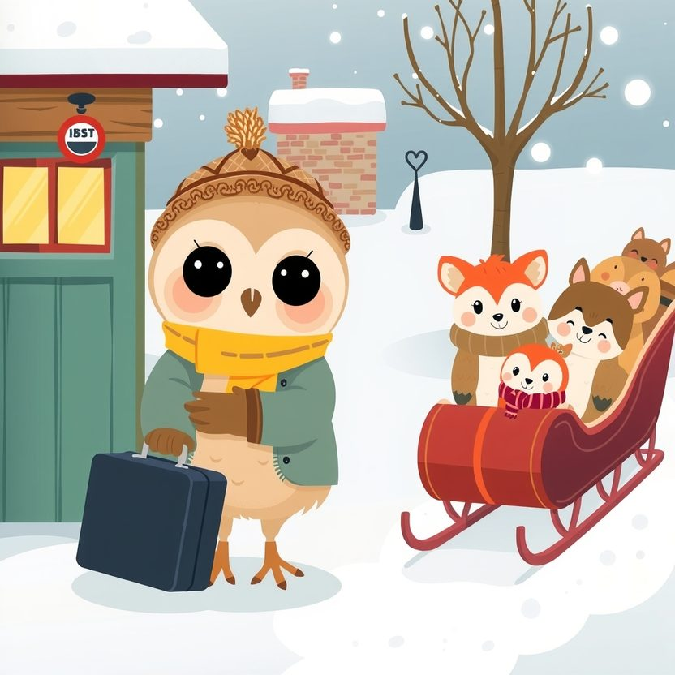

Titistoire › Les Étoiles (3-6 ans)
Plume et la première nuit loin du nid
Une histoire de Plume la chouette pour parler de : dormir loin de la maison.

▶ Écouter et regarder l'histoire
Gratuit, sans inscription : la voix lit, le texte suit mot à mot, les images tournent comme dans un album.
Le texte de l'histoire
Pour la première fois de sa vie, Plume part en vacances sans ses parents. Une semaine entière à la station des Sapins Blancs, avec ses amis, dans un grand chalet de bois.
Dans sa valise, elle a rangé son bonnet, ses moufles, trois livres. Et Chiffon, son doudou, elle l'a enfoui tout au fond, pour que personne ne le voie. Elle est grande, maintenant.
« Tu vas voir, ce sera formidable », promet maman en la serrant fort. Plume hoche la tête. Puis, du fond du traîneau, elle agite l'aile jusqu'à ce que maman ne soit plus qu'un tout petit point.
La journée est merveilleuse. Il y a de la neige jusqu'aux fenêtres ! Ils façonnent un bonhomme, avec une carotte en guise de bec. Puis ils dévalent la pente en luge, en poussant des cris.
Le soir, on se régale de soupe et de fromage fondu, et Monsieur Cabri raconte l'histoire du yéti qui craignait les chatouilles. Plume rit tant et tant qu'elle en attrape le hoquet.
Elle ne pense pas une seule fois à la maison. Pas une seule. Jusqu'au moment où on éteint la lumière.
Dans le dortoir, ses amis s'endorment aussitôt. Nestor ronfle. Rosie gigote. Filou marmonne en dormant. Plume, elle, garde les yeux grands ouverts.
Ce lit n'a pas l'odeur de son lit. Les poutres du plafond craquent. On n'entend pas papa ranger la cuisine, et aucun petit rai de lumière ne se glisse sous la porte.
Une boule monte dans sa gorge. Elle est grosse, elle est chaude, et elle a un nom que Plume ne connaissait pas encore : le mal du nid.
Elle voudrait rentrer. Tout de suite. Voler jusqu'à la maison, même dans la nuit, même dans la neige. Mais c'est trop loin, et ses ailes sont trop petites.
Tout doucement, elle entrouvre sa valise. Elle farfouille sous les moufles, en tire Chiffon, et le serre contre elle. Il sent la maison. Alors les larmes coulent toutes seules.
Elle pleure sans bruit, pelotonnée sous sa couverture, pour ne réveiller personne. « Je suis un bébé, pense-t-elle. Les autres dorment. Il n'y a que moi qui suis triste. »
« Plume ? » Un chuchotement monte du lit d'en dessous. C'est Nestor. Il ne ronfle plus. « Tu pleures ? » Vite, Plume cache Chiffon sous sa couverture. « Non. J'ai… un rhume. »
Un silence. Puis quelque chose se hisse au bord du lit. Un bout de tissu bleu, tout usé, avec une oreille mâchouillée. « Hmm… Lui, c'est Bidou. Je ne dors jamais sans lui. Ne le dis pas à Filou. »
Plume renifle. Elle ressort Chiffon. « Lui, c'est Chiffon. » Dans le noir, les deux doudous se saluent, nez contre nez. Ça va déjà un tout petit peu mieux.
La porte s'entrouvre. C'est Monsieur Cabri qui fait sa ronde, une lanterne au sabot. Les yeux mouillés ne lui échappent pas. Il ne dit pas « tu es grande, voyons ». Simplement, il s'assoit au bord du lit.
« Le premier soir, c'est le plus dur. La maison te manque. » « Et pourquoi ? » renifle Plume. « Parce que tu l'aimes. C'est plutôt une bonne nouvelle, non ? » Elle n'y avait pas pensé comme ça.
Il écarte le rideau. La lune est là, toute ronde, au-dessus des sapins enneigés. « Regarde-la bien. Ta maman la voit aussi, en ce moment. C'est la même. Vous regardez au même endroit. »
Plume regarde la lune de toutes ses forces. Elle imagine maman à la fenêtre du nid, avec son tricot. Dans sa gorge, la boule fond un peu, comme un glaçon dans la soupe.
« Bonne nuit, maman », chuchote-t-elle. Elle s'endort, Chiffon sous l'aile. En dessous, Nestor ronfle déjà, le nez dans Bidou.
Le lendemain matin, elle écrit une carte. « Chère maman, cher papa. Hier soir, vous m'avez beaucoup manqué. Aujourd'hui, j'apprends le chasse-neige. Je vous embrasse. Plume. » Et elle file dehors.
La deuxième nuit est plus douce. La troisième aussi. Chaque soir, à l'heure de la lune, la boule revient un petit peu. Mais Plume sait quoi faire, maintenant.
À la fin de la semaine, quand le traîneau la ramène, maman l'attend sur le quai. Plume se jette dans ses ailes. « Tu m'as manqué ! » « Toi aussi, ma chouette. Tous les soirs, je regardais la lune. »
Plume écarquille les yeux. Puis elle défait sa valise. Cette fois, Chiffon n'est pas caché au fond. Il trône tout en haut, bien en vue. Lui aussi, il a fait du ski. Et il a beaucoup de choses à raconter.